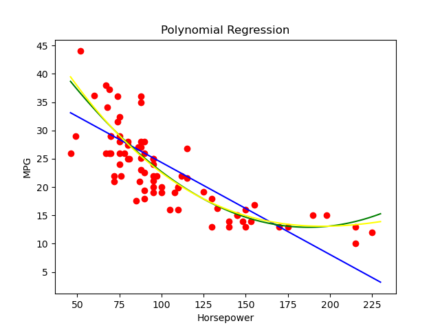
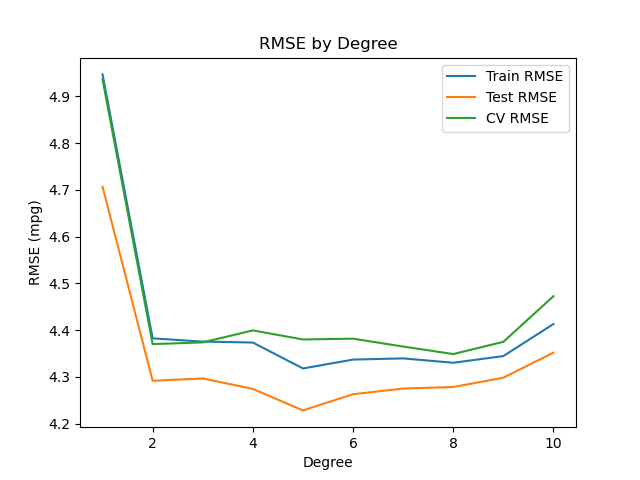

Auto MPG: polynomial regression
Rendered notebook · Download .ipynb · Project README · All ML regression projects
Question
Does a polynomial in horsepower predict fuel economy (mpg) better than a straight line, which degree works best, and how does a multi-feature model compare?
Data
Auto MPG from the UCI Machine Learning Repository, using the CSV copy on Kaggle: 398 cars, with 6 rows missing horsepower dropped (392 left). The notebook loads it into a local PostgreSQL table auto_mpg and logs metrics to model_results. The CSV is not included in this repository.
Database: the published notebooks connect with postgresql+psycopg2://postgres@localhost:5432/postgres. The local login is read from ~/.pgpass and is not in this repository. The original connection string was edited for publishing; nothing else in the notebook was changed except local file paths in warning messages.
Methods and tools
Python, pandas, NumPy, scikit-learn, PostgreSQL, SQLAlchemy, matplotlib
- 80/20 train/test split (
random_state=42). - Horsepower only: linear regression vs
PolynomialFeaturesof degree 2 and 3. - Degree sweep 1–10: train RMSE, test RMSE and 5-fold cross-validated RMSE on the training set.
- Multi-feature model: displacement, horsepower, weight, model year and two origin dummies (6 features), linear regression. A scaled degree-2 pipeline on the same features is fitted in the last cell, but its metrics are not printed.
Results (test set)
| Model | RMSE (mpg) | MAE | R² |
|---|---|---|---|
| Linear, horsepower | 4.71 | 3.78 | 0.566 |
| Degree 2, horsepower | 4.29 | 3.26 | 0.639 |
| Degree 3, horsepower | 4.30 | 3.24 | 0.638 |
| Linear, 6 features | 3.29 | 2.48 | 0.787 |
Degree sweep (horsepower only)
| Degree | Train RMSE | Test RMSE | CV RMSE |
|---|---|---|---|
| 1 | 4.95 | 4.71 | 4.94 |
| 2 | 4.38 | 4.29 | 4.37 |
| 3 | 4.38 | 4.30 | 4.37 |
| 4 | 4.37 | 4.27 | 4.40 |
| 5 | 4.32 | 4.23 | 4.38 |
| 6 | 4.34 | 4.26 | 4.38 |
| 7 | 4.34 | 4.27 | 4.36 |
| 8 | 4.33 | 4.28 | 4.35 |
| 9 | 4.34 | 4.30 | 4.37 |
| 10 | 4.41 | 4.35 | 4.47 |
Key findings
- A curve fits much better than a line: going from degree 1 to degree 2 cuts test RMSE from 4.71 to 4.29 mpg and CV RMSE from 4.94 to 4.37.
- Higher degrees add little: CV RMSE stays between 4.35 and 4.47 from degree 2 to 10. The notebook logs degree 2 with CV RMSE 4.37.
- Adding features matters more than adding degrees: the 6-feature linear model reaches test RMSE 3.29 and R² 0.787.
Charts


Notebook
mpg_PR (rendered) · mpg_PR.ipynb. 32 code cells (26 with outputs, 4 charts), 3 markdown cells.
Run top to bottom (execution counts 1–31); the last code cell is empty. The model_results table shown in the notebook holds repeated rows from several runs. The sweep and final cells show harmless NumPy RuntimeWarning messages from scikit-learn’s matrix multiply.